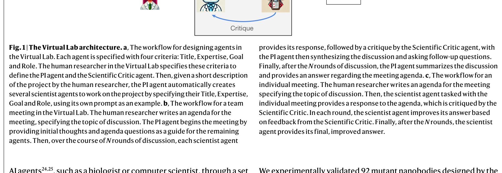

저자: Kyle Swanson, Wesley Wu, Nash L. Bulaong, John E. Pak, James Zou | 날짜: 2025 | Journal: Nature | DOI: 10.1038/s41586-025-09442-9

Figure 1
Virtual Lab은 LLM(GPT-4o) 기반 멀티 에이전트 시스템과 인간 연구자의 협업으로 학제간 과학 연구를 수행하는 프레임워크이다. PI 에이전트가 면역학자·계산생물학자·ML 전문가 에이전트를 이끌며, ESM + AlphaFold-Multimer + Rosetta를 조합한 나노바디 설계 파이프라인을 에이전트가 자체적으로 설계했다. 4개 시작 나노바디(Ty1, H11-D4, Nb21, VHH-72)에서 92개 돌연변이 나노바디를 생성하여 실험 검증한 결과, 93.5%가 양호한 발현량(>5 mg/L)을 보였고, H11-D4/Nb21 시리즈의 96%가 Wuhan RBD 결합력을 유지했으며, Nb21 돌연변이(I77V-L59E-Q87A-R37Q)가 JN.1 RBD에 결합(EC50 2.0 ng/mL)하고 KP.3 RBD에도 결합 증거를 보였다. 전체 미팅 과정은 1-2시간($10-20 GPT-4o 비용)에 완료되었다.
| 항목 | 점수 |
|---|---|
| Novelty | 5/5 |
| Technical Soundness | 4/5 |
| Significance | 5/5 |
| Clarity | 4/5 |
| Overall | 5/5 |
총평: LLM 멀티 에이전트 시스템이 학제간 연구 설계부터 실험 검증까지 완수하여 Nature에 게재된 최초의 사례로, $10-20 비용과 1-2시간의 AI 토론으로 실세계 과학적 발견을 이끌어낸 AI for Science 분야의 중요한 이정표이다.